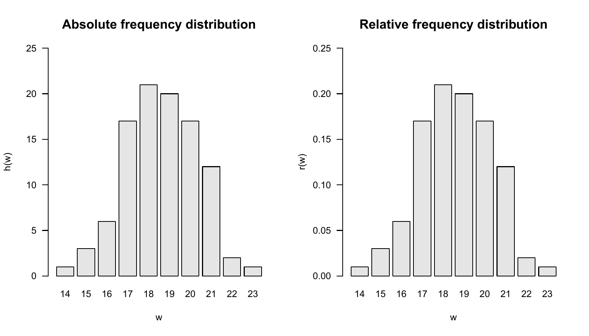
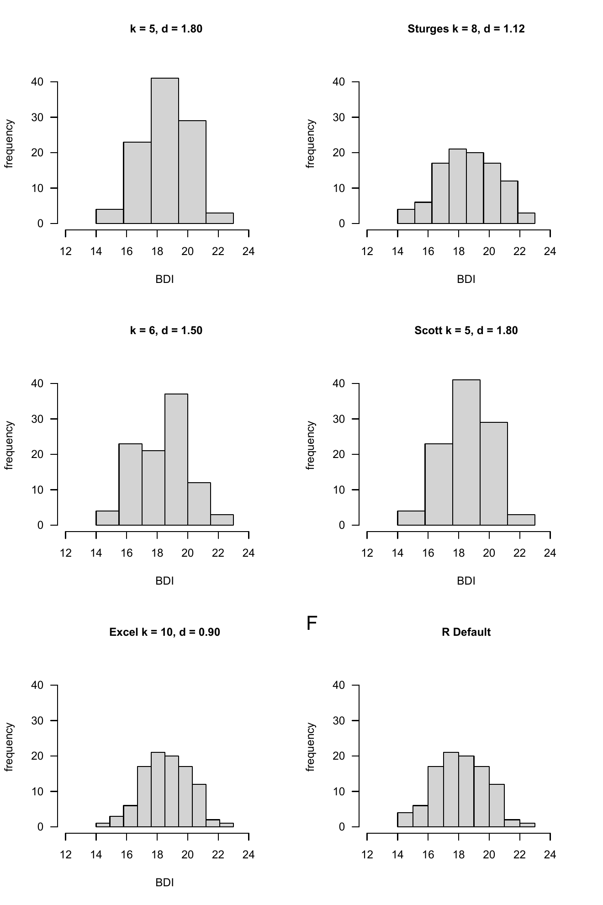
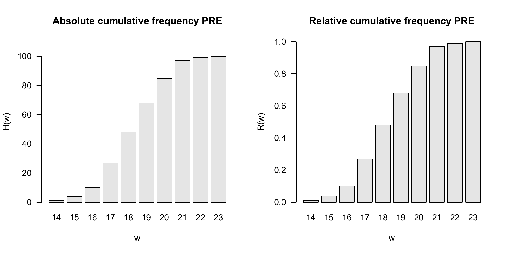
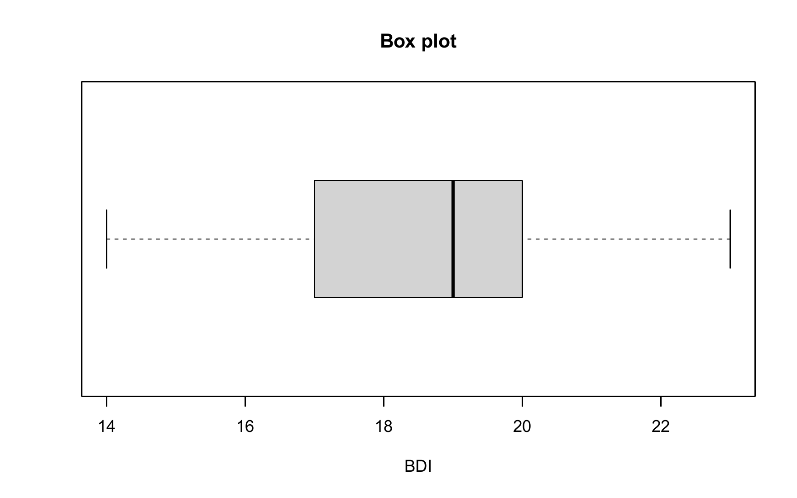
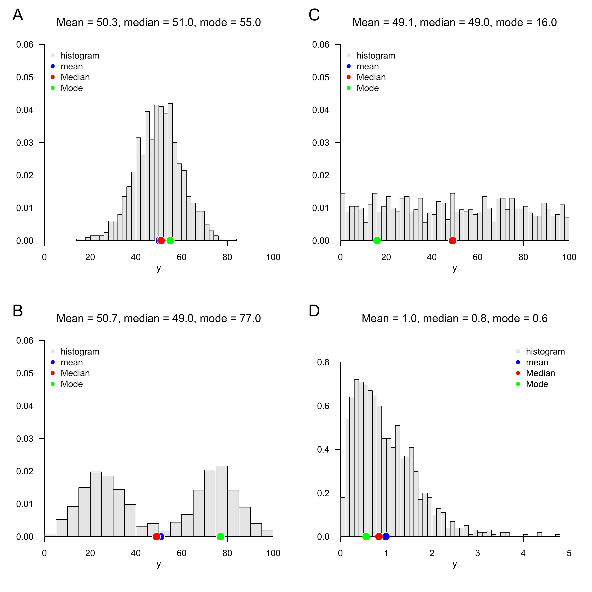

| GROUP | PRE |
|---|---|
| T | 17 |
| T | 20 |
| T | 16 |
| T | 18 |
| T | 21 |
| T | 17 |
| T | 17 |
| T | 17 |
| T | 18 |
| T | 18 |
| T | 20 |
| T | 17 |
| T | 16 |
| T | 18 |
| T | 16 |
| T | 18 |
| T | 17 |
| T | 14 |
| T | 18 |
| T | 18 |
| T | 20 |
| T | 20 |
| T | 21 |
| T | 19 |
| T | 19 |
| T | 17 |
| T | 20 |
| T | 21 |
| T | 17 |
| T | 17 |
| T | 19 |
| T | 20 |
| T | 22 |
| T | 20 |
| T | 21 |
| T | 20 |
| T | 16 |
| T | 15 |
| T | 15 |
| T | 18 |
| T | 21 |
| T | 17 |
| T | 18 |
| T | 21 |
| T | 17 |
| T | 19 |
| T | 16 |
| T | 17 |
| T | 17 |
| T | 18 |
| C | 22 |
| C | 19 |
| C | 21 |
| C | 18 |
| C | 19 |
| C | 17 |
| C | 20 |
| C | 19 |
| C | 19 |
| C | 19 |
| C | 17 |
| C | 20 |
| C | 18 |
| C | 20 |
| C | 18 |
| C | 18 |
| C | 15 |
| C | 18 |
| C | 17 |
| C | 19 |
| C | 19 |
| C | 19 |
| C | 20 |
| C | 19 |
| C | 20 |
| C | 19 |
| C | 21 |
| C | 19 |
| C | 19 |
| C | 18 |
| C | 20 |
| C | 16 |
| C | 21 |
| C | 19 |
| C | 20 |
| C | 18 |
| C | 23 |
| C | 18 |
| C | 19 |
| C | 18 |
| C | 21 |
| C | 17 |
| C | 20 |
| C | 21 |
| C | 21 |
| C | 20 |
| C | 18 |
| C | 18 |
| C | 19 |
| C | 19 |
10 Descriptive statistics
The aim of evaluating descriptive statistics is to make data sets accessible to human observation as efficiently as possible. As soon as the number of data points in a data set exceeds a certain number, pure numerical representations are usually difficult for human cognition to grasp. This is where descriptive statistics comes in and, in addition to graphical representations of larger data sets, also offers measures that describe certain characteristic aspects of a data set, such as its “average” value or its variability, in the sense of data reduction. In this section we want to use univariate descriptive statistics to get to know the first procedures and measures that make it possible to summarize data sets in which there is one number per study unit. We look in particular at frequency distributions and histograms, distribution functions and quantiles, as well as measures of central tendency, which allow statements about “average” data values, and measures of data variability, which allow statements about the spread of data values.
In contrast to probabilistic modeling in the context of frequentist and Bayesian inference, descriptive statistics is not based on probability theory and can therefore be viewed independently of it. However, many aspects of descriptive statistics ultimately only make sense against the background of probability theory considerations and, conversely, many concepts in probability theory are motivated by descriptive statistical concepts. If the present section does not have a background in probability theory, its full meaning will certainly only become apparent in the context of the concepts of probability theory.
In this section, we focus on descriptive statistics for describing a data set of the form \[\begin{equation} y := (y_1,...,y_n) \mbox{ with } y_i \in \mathbb{R} \mbox{ for } i = 1,...,n. \end{equation}\] It is initially irrelevant whether such a data set is in the form of a column vector \(y \in \mathbb{R}^{n \times 1}\) or a row vector \(y \in \mathbb{R}^{1 \times n}\). Furthermore, we focus on the practical evaluation of the descriptive statistics considered, so we provide many examples for their calculation with R.
Application example
As an application example, we consider a data set for the evidence-based evaluation of psychotherapy for depression. To do this, we assume that \(n = 100\) patients were randomly divided into a treatment and a control study condition and were asked about their depression severity using the BDI-II questionnaire at the beginning of the respective intervention. We do not want to consider the BDI-II scores collected after the interventions in this chapter. So we assume that we have a data set as shown by the following R code in Table 10.1.
10.1 Frequency distributions
We start with the concepts of absolute and relative frequency distribution. For data sets with values in which the same value occurs multiple times, frequency distributions can provide a first impression of the nature of the data set.
Definition 10.1 (Absolute and relative frequency distributions) \(y := (y_1,...,y_n)\) is a data set and \(W := \{w_1,...,w_k\}\) with \(k \le n\) are the values occurring in the data set. Then the function is called \[\begin{equation} h : W \to \mathbb{N}, w \mapsto h(w) := \mbox{number of } y_i \mbox{ in } y \mbox{ with } y_i = w \end{equation}\] the absolute frequency distribution of the values of \(y\) and the function \[\begin{equation} r : W \to [0,1], w \mapsto r(w) := \frac{h(w)}{n} \end{equation}\] is called the relative frequency distribution of the values of \(y\).
Frequency distributions can be evaluated and displayed in R by combining the table() and barplot() functions. The following R code first generates the absolute and relative frequency distributions of the pre-intervention BDI-II data of the example data set.
D = read.csv("./_data/110-descriptive-statistics.csv") # loading the data set
y = D$PRE # double vector of the PRE values
n = length(y) # number of data values (100)
H = as.data.frame(table(y)) # absolute frequency distribution (data frame)
names(H) = c("w", "ah") # column naming
H$rh = H$ah/n # relative frequency distribution
print(H, digits = 1) # output w ah rh
1 14 1 0.01
2 15 3 0.03
3 16 6 0.06
4 17 17 0.17
5 18 21 0.21
6 19 20 0.20
7 20 17 0.17
8 21 12 0.12
9 22 2 0.02
10 23 1 0.01From the output of the data frame H we can see that in the data set 10 under consideration, different values w occur between 14 and 23, whereby, for example, the values 18 and 22 occur 21 times and twice respectively. Both the absolute and the relative frequency distribution show that values around 18 occur more frequently in the present data set, whereas extreme values such as 13 or 23 occur rather rarely. Note that the relative frequency distribution is simply a scaled form of the absolute frequency distribution. Qualitatively, i.e. with regard to the frequent or rare occurrence of certain values, the two frequency distributions do not differ. This becomes particularly clear when both frequency distributions are visualized, as in Figure 10.1. The following R code uses the barplot() function for this purpose. The height of the bar plotted above a value \(w\) corresponds to the function values \(h(w)\) or \(r(w)\). The visual insight naturally corresponds to the inspection of the H data frame. Both frequency distributions show that values around 18 occur more frequently in the present data set, whereas lower or higher values such as 13 or 23 are rather rare.
pdf( # pdf copy function
file = "./_figures/110-frequency-distributions.pdf", # filename
width = 7, # width (inches)
height = 4) # height (inches)
par( # figure parameters
mfcol = c(1,2), # rows and columns layout
las = 1, # x-tick orientation
cex = 0.7, # annotation enlargement
cex.main = 1.3) # title enlargement
h = H$ah # h(w) values
r = H$rh # r(w) values
names(h) = H$w # barplot needs w values as names
names(r) = H$w # barplot needs w values as names
barplot( # bar chart
h, # absolute frequencies
col = "gray90", # bar color
xlab = "w", # x axis label
ylab = "h(w)", # y axis label
ylim = c(0,25), # y axis limits
main = "Absolute frequency distribution") # title
barplot( # bar chart
r, # absolute frequencies
col = "gray90", # bar color
xlab = "w", # x axis label
ylab = "r(w)", # y axis label
ylim = c(0,.25), # y axis limits
main = "Relative frequency distribution") # title
dev.off() # end image editing
10.2 Histograms
If no values appear multiple times in a data set, the absolute and relative frequency distributions for each of these values take the value \(1\) and \(1/n\), respectively, and then provide no value beyond visual inspection of the data set. However, the histograms presented in this section offer a way to generate visual representations of frequency distributions in this case too. Different values that are “close to each other” in a well-defined sense are combined into classes and the absolute or relative frequencies of these classes are determined. Since in data sets in which the same values occur multiple times, these values are naturally in the same class, histograms can also be usefully used in the case considered in Section 10.1. Histograms generalize the frequency distributions considered in the previous section for data sets with multiple values.
We first give a definition of the concept of histogram. Note that in this definition the process of class formation, the determination of their absolute and relative frequencies, and the visualization of these frequencies are closely interlinked. This is due to the convention that the term histogram describes both a specific form of data analysis and its visualization.
Definition 10.2 (Histogram) A histogram is a diagram in which, for a data set \(y = (y_1,...,y_n)\) with values \(W := \{w_1,...,w_m\}\) with \(m \le n\) for \(j = 1,...,k\) over adjacent intervals \([b_{j-1},b_j[\) with \(b_0 := \min W\) and \(b_k := \max W\), rectangles with the width \(d_j := b_j - b_{j-1}\) and the height \(h(w)\) or \(r(w)\) for \(w \in [b_{j-1}, b_{j}[\) are shown. The intervals \([b_{j-1},b_j[\) are called classes (bins).
Of course, the visual appearance of a histogram depends heavily on how precisely the values of a data set are grouped into classes. According to Definition 10.2, the decisive parameter for this is the number of classes \(k\) that are selected between the minimum value \(b_0\) and the maximum value \(b_k\) of the data set. Below we present some conventional values for the number of classes \(k\) and calculate and visualize them using the example data set as an example. We always assume that the neighboring intervals \([b_{j-1},b_j[\) with \(j = 1,...,k\) are chosen for the number of classes \(k\) with a constant width \(d = b_j - b_{j-1}\).
To calculate and visualize histograms we use the R function hist(). In this case, the classes \([b_{j-1}, b_{j}[\) are specified for \(j = 1,...,k\) as the argument breaks. Specifically, breaks is the R vector c(b_0,b_1,...,b_k) with length \(k + 1\). To illustrate the effect of different choices of the number of classes, we first read the data set and determine its minimum and maximum values \(b_0\) and \(b_k\).
Minimum b_0 : 14
Maximum b_k : 23A first possibility for choosing the classes \(k\) is to achieve a desired constant width \(d\) as precisely as possible. This is what you rely on \[\begin{equation} k := \left\lceil \frac{b_k - b_0}{d} \right\rceil. \end{equation}\] Note that the application of the rounding function implies that the resulting class width is at most the desired value, but can also be smaller. The following R code illustrates this effect.
Desired class width d : 2
Number of classes k : 5
Intervals [b_j-1, b_j] : 14 15.8 17.6 19.4 21.2 23
Achieved class width d : 1.8Choosing a desired class width of \(d = 1.5\), on the other hand, leads to a resulting class width for the present data set that corresponds to the desired one.
Desired class width d : 1.5
Number of classes k : 6
Intervals [b_j-1, b_j] : 14 15.5 17 18.5 20 21.5 23
Achieved class width d : 1.5Another option is to make the number of classes dependent on the number of data points in the data set. The Excel standard choice is included \[\begin{equation} k := \lceil \sqrt{n} \rceil. \end{equation}\] The following R code implements this choice for the present data set.
Number of data points n : 100
Number of classes k : 10
Intervals [b_j-1, b_j] : 14 14.9 15.8 16.7 17.6 18.5 19.4 20.3 21.2 22.1 23
Achieved class width d : 0.9The number of classes suggested by Sturges (1926) is similar to the Excel standard, which optimizes the representation under an implicit normal distribution assumption \[\begin{equation} k := \lceil \log_2 n + 1\rceil \end{equation}\] is given. In this case the result is:
Number of data points n : 100
Number of classes k : 8
Intervals [b_j-1, b_j] : 14 15.125 16.25 17.375 18.5 19.625 20.75 21.875 23
Achieved class width d : 1.125Another possibility is to incorporate descriptive statistics of the data set into the choice of the number of classes. As a measure of the dispersion of the data in the data set, the number of classes according to Scott (1979) uses the empirical standard deviation (cf. Section 10.6) in order to use the histogram to achieve a density estimate for a normal distribution. We do not want to delve into the non-parametric background of this approach here, but simply note that the choice of the number of classes according to Scott (1979) by determining the class width \[\begin{equation} d := 3.49 S/\sqrt[3]{n} \end{equation}\] and the subsequent choice of the number of classes \[\begin{equation} k := \left\lceil \frac{b_k - b_0}{d} \right\rceil \end{equation}\] is given, where \(S\) denotes the standard deviation of the data set. In this case the result is:
Number of data points n : 100
Standard deviation : 1.740167
Class width by Scott d : 2
Number of classes k : 5
Intervals [b_j-1, b_j] : 14 15.8 17.6 19.4 21.2 23
Achieved class width d : 1.8By default, the hist() function implemented in R uses a modification of the number of classes suggested by Sturges (1926) and offers a number of additional options for selecting classes. ?hist provides an overview of this. The following R code visualizes the absolute frequencies of the values of the example data set using the classes specified above.
# figure parameters
pdf( # pdf copy function
file = "./_figures/110-histograms.pdf", # filename
width = 6, # width (inches)
height = 9) # height (inches)
par( # figure parameters
mfcol = c(3,2), # rows and columns layout
las = 1, # x-tick orientation
cex = .7, # annotation enlargement
cex.main = .9) # title enlargement
x_min = 12 # x-axis limit
x_max = 25 # x-axis limit
y_min = 0 # y-axis limit
y_max = 45 # y-axis limit
label = c("", "", "Excel", "Sturges", "Scott") # title
# histograms with predefined number of classes and class width
for(i in 1:5){
hist( # histogram
y, # dataset
breaks = bs[[i]], # breaks argument
xlim = c(x_min, x_max), # x-axis limits
ylim = c(y_min, y_max), # y-axis limits
ylab = "frequency", # y-axis label
xlab = "BDI", # x-axis label
main = sprintf(paste(label[i], "k = %.0f, d = %.2f"), ks[i],ds[i])) # title
}
# r default histogram
hist( # histogram
y, # dataset
xlim = c(x_min, x_max), # x-axis limits
ylim = c(y_min, y_max), # y-axis limits
ylab = "frequency", # y-axis label
xlab = "", # x-axis label
main = "R Default") # title
mtext(LETTERS[6], adj=0, line=2, cex = 1.2, at = 8) # subplot letter
dev.off() # end image editing
10.3 Empirical distribution functions
In addition to the question of how frequently certain values or classes of values occur in a data set, it can be interesting to examine how frequently values that are smaller than a certain value occur. Although the answer to this question is of course implicit in the absolute and relative frequencies or the corresponding histograms, it is sometimes advantageous to have this information directly available. The concepts of cumulative absolute and relative frequency distribution and empirical distribution function introduced in this section denote the corresponding analogues to the concepts discussed in Section 10.1 and Section 10.2. We begin by defining the cumulative absolute and cumulative relative frequency distributions.
Definition 10.3 (Cumulative absolute and relative frequency distributions) Let \(y = (y_1,...,y_n)\) be a data set, \(W := \{w_1,...,w_k\}\) with \(k \le n\) the numerical values occurring in the data set and \(h\) and \(r\) the absolute and relative frequency distributions of the values of \(y\), respectively. Then the function is called \[\begin{equation} H : W \to \mathbb{N}, w \mapsto H(w) := \sum_{w' \le w} h(w') \end{equation}\] the cumulative absolute frequency distribution of \(y\) and the function \[\begin{equation} R : W \to [0,1], w \mapsto R(w) := \sum_{w' \le w} r(w') \end{equation}\] the cumulative relative frequency distribution of the numerical values of \(y\).
In the sense of the definition Definition 10.1 applies to the cumulative frequency distributions \[\begin{equation} H(w) = \mbox{number of } y_i \mbox{ in } y \mbox{ with } y_i \le w \end{equation}\] and \[\begin{equation} R(w) = \mbox{number of } y_i \mbox{ in } y \mbox{ with } y_i \le w \mbox{ divided by } n. \end{equation}\]
In R, the function cumsum() allows the calculation of cumulative sums and thus enables the evaluation of cumulative frequency distributions, as the following R code demonstrates using the example data set.
D = read.csv("./_data/110-descriptive-statistics.csv") # loading the data set
y = D$PRE # pre-intervention BDI-II data
n = length(y) # number of data values
H = as.data.frame(table(y)) # absolute frequency distribution as a data frame
names(H) = c("w", "h") # column naming
H$H = cumsum(H$h) # cumulative absolute frequency distribution
H$r = H$h/n # relative frequency distribution
H$R = cumsum(H$r) # cumulative relative frequency distribution
print(H, digits = 1) w h H r R
1 14 1 1 0.01 0.01
2 15 3 4 0.03 0.04
3 16 6 10 0.06 0.10
4 17 17 27 0.17 0.27
5 18 21 48 0.21 0.48
6 19 20 68 0.20 0.68
7 20 17 85 0.17 0.85
8 21 12 97 0.12 0.97
9 22 2 99 0.02 0.99
10 23 1 100 0.01 1.00Pay particular attention to the comparison of h and H as well as r and R, which illustrate the cumulative totals in Definition 10.3. The following R code enables the representation of the cumulative frequency distributions determined as shown in Figure 10.3. Obviously, the absolute and relative frequency of values less than the smallest value in the data set is zero. On the other hand, the absolute and relative frequency of values smaller than the largest value in the data set are \(n\) and \(n/n = 1\), respectively.
pdf( # pdf copy function
file = "./_figures/110-cumulative-frequency-distributions.pdf", # filename
width = 10, # width (inches)
height = 5) # height (inches)
Hw = H$H # h(w) values
Rw = H$R # r(w) values
names(Hw) = H$w # barplot needs w values as names
names(Rw) = H$w # barplot needs w values as names
par( # figure parameters
mfcol = c(1,2), # rows and columns layout
las = 1, # x-tick orientation
cex = 1) # annotation enlargement
barplot( # bar chart
Hw, # h(w) values
col = "gray90", # bar color
xlab = "w", # x-axis label
ylab = "H(w)", # y-axis label
ylim = c(0,110), # y-axis limits
las = 1, # axis tick label orientation
main = "Absolute cumulative frequency PRE") # title
barplot( # bar chart
Rw, # r(w) values
col = "gray90", # bar color
xlab = "w", # x-axis label
ylab = "R(w)", # y-axis label
ylim = c(0,1), # y-axis limits
las = 1, # axis tick label orientation
main = "Relative cumulative frequency PRE") # title
dev.off() # end image editing
The cumulative analogue of a histogram is the empirical distribution function. In contrast to a histogram, no definition of classes is required to determine an empirical distribution function. Instead of the interval division of the real numbers between the minimum and the maximum of a data set, the empirical distribution function simply uses the real numbers, as the following definition makes clear.
Definition 10.4 (Empirical distribution function) Let \(y = (y_1,...,y_n)\) be a data set. Then the function is called \[\begin{equation} F: \mathbb{R} \to [0,1], x \mapsto F(x) := \frac{\mbox{number of } y_i \mbox{ in } y \mbox{ with } y_i \le x}{n} \end{equation}\] the empirical distribution function (EVF) of \(y\).
The empirical distribution function is sometimes called the empirical cumulative distribution function. In general, the empirical distribution function as in Definition 10.4 is limited to specifying the relative frequencies. Of course, not all real numbers appear in data sets. This implies that the relative frequency assigned to real numbers that lie between two adjacent values in the data set is equal to that of the smaller of the two values. Typically, empirical distribution functions are step functions. In R, the function ecdf() can be used to evaluate and visualize the empirical distribution function, as the following R code demonstrates using the example data set and is visualized in Figure 10.4. For example, you can read from Figure 10.4 that the relative frequency of values smaller than 17.9 is approximately 0.3. Values smaller than 17.8 have the same relative frequency.
D = read.csv("./_data/110-descriptive-statistics.csv") # loading the data set
y = D$PRE # pre-intervention BDI-II data
evf = ecdf(y) # evaluation of the EVF
pdf( # pdf copy function
file = "./_figures/110-ecdf.pdf", # filename
width = 8, # width (inches)
height = 5) # height (inches)
plot( # plot() knows how to handle ecdf object
evf, # ecdf object
xlab = "BDI", # x-axis label
ylab = "Relative frequency", # y-axis label
main = "Empirical distribution function") # title
dev.off() # end image editing
10.4 Quantiles and boxplots
The empirical distribution function provides an answer, at least graphically represented, to the question of how large the relative proportion of values in a data set is that are smaller than a given value. The quantiles introduced in this section can be understood as an inversion of this data set interrogation. Specifically, with quantiles you specify a relative proportion \(0 \le p \le 1\) of the values of a data set and ask which value of the data set is such that \(p \cdot 100 \%\) of the values of the data set are less than or equal to this value. We use the following definition of the term \(p\) quantile.
Definition 10.5 (\(p\) quantile) Let \(y = (y_1,...,y_n)\) be a data set and \[\begin{equation} y_s = \left(y_{(1)}, y_{(2)}, ...,y_{(n)}\right) \mbox{ with } \min_{1 \le i \le n} y_i = y_{(1)} \le y_{(2)} \le \cdots \le y_{(n)} = \max_{1 \le i \le n} y_i \end{equation}\] be the corresponding data set sorted in ascending order. Furthermore, let \(\lfloor \cdot \rfloor\) denote the rounding function. Then for a \(p \in [0,1]\) is the number \[\begin{equation} y_p := \begin{cases} y_{(\lfloor np + 1 \rfloor)} & \mbox{ if } np \notin \mathbb{N} \\ \frac{1}{2}\left(y_{(np)} + y_{(np + 1)}\right) & \mbox{ if } np \in \mathbb{N} \\ \end{cases} \end{equation}\] the \(p\) quantile of the data set \(y\).
Note that the \(p\) quantile \(y_p\) to Definition 10.5 is either a value of the data set or a value between two values of the data set. After constructing \(y_p\), it applies in particular that at least \(p \cdot 100\%\) of all values in the data set are less than or equal to \(y_p\) and at least \((1-p) \cdot 100\%\) of all values in the data set are greater than or equal to \(y_p\). The \(p\) quantile therefore divides the ordered data set \(y_s\) in the ratio \(p\) to \((1-p)\). Depending on the choice of \(p\), the \(p\) quantiles receive special names:
- \(y_{0.25}, y_{0.50}, y_{0.75}\) are called lower quartile, median and upper quartile, respectively,
- \(y_{j\cdot 0.10}\) for \(j = 1,...,9\) are called deciles and
- \(y_{j\cdot 0.01}\) for \(j = 1,...,99\) are called percentiles.
To clarify the concept of the \(p\) quantile, let us consider an example based on Henze (2018), chapter 5. First of all, the data set shown in the table below and its version sorted in ascending order are given.
We first want to determine the lower quartile, i.e. the \(0.25\) quantile, of this data set. It’s apparently \(n = 10\) and we chose \(p := 0.25\). Based on Definition 10.5 we find that \[\begin{equation} np = 10 \cdot 0.25 = 2.5 \notin \mathbb{N}. \end{equation}\] So according to Definition 10.5 it applies that \[\begin{equation} y_{0.25} = y_{(\lfloor 2.5 + 1\rfloor)} = y_{(3)} = 3.0. \end{equation}\] The lower quartile of the data set under consideration is therefore the value \(3.0\) of the data set.
Next we want to determine the \(0.80\) quantile of the data set. Apparently it is still \(n = 10\) and we have now chosen \(p := 0.80\). In this case we find that \[\begin{equation} np = 10 \cdot 0.80 = 8 \in \mathbb{N}. \end{equation}\] So follows after Definition 10.5 \[\begin{equation} y_{0.80} = \frac{1}{2} \left(y_{(8)} + y_{(8 + 1)}\right) = \frac{1}{2}\left(y_{(8)} + y_{(9)}\right) = \frac{8.5 + 9.0}{2} = 8.75. \end{equation}\] The \(y_{0.80}\) quantile of the data set under consideration is with \(8.75\) the value between the values \(8.5\) and \(9\) of the data set. In R the quantiles determined in this way are evaluated as follows.
0.25 quantile: 30.80 quantile: 8.75With quantile(), R also provides a function that automates the quantile determination of a data set. However, it should be noted that the definition of the quantile term given in Definition 10.5 is only one of at least nine different quantile definitions and the exact values can differ from definition to definition. The specific quantile definition used by quantile() is selected via the function argument type. Hyndman & Fan (1996) provide an overview on the theoretical level, and ?quantile on the implementation level. As an example, we look at determining the \(0.25\) quantile of the pre-intervention BDI-II sample data set using type = 8.
0.25 quantile (type = 8): 17Finally, a boxplot visualizes a quantile-based summary of a data set, typically visualizing the minimum and maximum of a data set as well as the lower quartile, median and upper quartile. In R you create a boxplot using the boxplot() function, as the following R code demonstrates using the pre-intervention BDI-II data set.
D = read.csv("./_data/110-descriptive-statistics.csv") # loading the data set
pdf( # pdf copy function
file = "./_figures/110-boxplot.pdf", # filename
width = 8, # width (inches)
height = 5) # height (inches)
boxplot( # box plot
D$PRE, # dataset
horizontal = T, # horizontal representation
range = 0, # whiskers up to min y and max y
xlab = "BDI", # x axis label
main = "Box plot") # title
dev.off() # end image editing
In Figure 10.5, \(\min y\) and \(\max y\) are represented as so-called “whisker endpoints”, \(y_{0.25}\) and \(y_{0.75}\) form the lower and upper boundaries of the central gray box and the median \(y_{0.50}\) is represented as a line in the central gray box. Here too, there are a lot of box plot variations, see McGill et al. (1978). A precise explanation of the data set properties displayed graphically is always necessary. Finally, it should be noted that the representation of data sets using boxplots has become somewhat out of fashion in the last twenty years and is only very rarely found in current scientific publications.
10.5 Measures of central tendency
In this section we look at some basic data set metrics that are central to descriptive statistics and provide information about the “average” value of a data set. We start by defining the mean.
10.5.1 Mean
Definition 10.6 (Mean) Let \(y = (y_1,...,y_n)\) be a data set. Then that means \[\begin{equation} \bar{y} := \frac{1}{n}\sum_{i=1}^n y_i \end{equation}\] the mean of \(y\).
The mean of a data set is the sum of the data values divided by the number of data values. The mean defined here is also referred to as the arithmetic mean or average. In the context of frequentist inference, we will refer to the mean as the sample mean in the context of the random sampling model. In particular, the models of frequentist inference also allow the functional form of the mean to be more deeply substantiated, as we will see at a given point. Using the sum function, you can calculate the mean of a data set in R as follows.
Mean of PRE-BDI-II data 18.61With the mean() function, R of course also provides a function for automated calculation of the mean value.
In the following theorem we first note two properties of the mean value of a data set that make its classification as a measure of the central tendency of a data set plausible.
Theorem 10.1 (Centrality properties of the mean) Let \(y = (y_1,...,y_n)\) be a data set and \(\bar{y}\) be the mean of \(y\). Then apply
- The sum of the deviations from the mean is zero, \[\begin{equation} \sum_{i=1}^n (y_i - \bar{y}) = 0. \end{equation}\]
- The absolute sums of negative and positive deviations from the mean are equal, i.e. if \(j = 1,...,n_j\) denotes the data point indices with \((y_j - \bar{y}) < 0\) and \(k = 1,...,n_k\) denotes the data point indices with \((y_k - \bar{y}) \ge 0\), then with \(n = n_j + n_k\) it applies that \[\begin{equation} \vert\sum_{j = 1}^{n_j} (y_j - \bar{y})\vert = \vert\sum_{k = 1}^{n_k} (y_k - \bar{y})\vert. \end{equation}\]
Proof. (1) It applies \[\begin{align} \begin{split} \sum_{i=1}^n (y_i - \bar{y}) & = \sum_{i=1}^n y_i - \sum_{i=1}^n \bar{y} \\ & = \sum_{i=1}^n y_i - n\bar{y} \\ & = \sum_{i=1}^n y_i - \frac{n}{n}\sum_{i=1}^n y_i \\ & = \sum_{i=1}^n y_i - \sum_{i=1}^n y_i \\ & = 0. \end{split} \end{align}\]
(2) Let \(j = 1,...,n_j\) be the indices with \((y_j - \bar{y}) < 0\) and \(k = 1,...,n_k\) the indices with \((y_k - \bar{y}) \ge 0\), such that \(n = n_j + n_k\). Then applies \[\begin{align} \begin{split} \sum_{i=1}^n (y_i - \bar{y}) & = 0 \\ \Leftrightarrow \sum_{j=1}^{n_j} (y_j - \bar{y}) + \sum_{k=1}^{n_k} (y_k - \bar{y}) & = 0 \\ \Leftrightarrow \sum_{k=1}^{n_k} (y_k - \bar{y}) & = - \sum_{j=1}^{n_j} (y_j - \bar{y}) \\ \Leftrightarrow \vert\sum_{j = 1}^{n_j} (y_j - \bar{y})\vert & = \vert\sum_{k = 1}^{n_k} (y_k - \bar{y})\vert. \end{split} \end{align}\]
According to Theorem 10.1, the mean value of a data set is just such that the total deviations of the data points from this value equalize to zero and that positive and negative deviations from the mean balance each other out. In R you can verify Theorem 10.1 using the example data set as follows.
# dataset
D = read.csv("./_data/110-descriptive-statistics.csv") # loading the data set
y = D$PRE # pre-intervention BDI-II data
s = sum(y - mean(y)) # sum of deviations from the mean
s_1 = sum(y[y <= mean(y)] - mean(y)) # sum of all negative deviations
s_2 = sum(y[y > mean(y)] - mean(y)) # sum of all positive deviationsSum of deviations from the mean: 0
Sums of positive and negative deviations: -71.28 71.28Theorem 10.2 (Summation properties of the mean) Given two data sets \(y = (y_1,...,y_n)\) and \(z = (z_1,...,z_n)\) of the same size and let it be by \[\begin{equation} y + z := (y_1 + z_1,...,y_n + z_n) \end{equation}\] the sum of these data sets is defined. Furthermore, let \(\bar{y}\) and \(\bar{z}\) be the mean values of the data sets \(y\) and \(z\), respectively. Then \[\begin{equation} \overline{y + z} = \bar{y} + \bar{z} \end{equation}\]
Proof. It applies \[\begin{align} \begin{split} \overline{y + z} & := \frac{1}{n}\sum_{i=1}^n (y_i + z_i) \\ & = \frac{1}{n}\sum_{i = 1}^n y_i + \frac{1}{n}\sum_{i = 1}^n z_i \\ & =: \bar{y} + \bar{z}. \end{split} \end{align}\]
If you look at the sum of two data sets, it is irrelevant to determining their mean value whether you first add up the data sets and then determine the mean value of the summed data set or whether you determine the mean value for each of the two data sets and add them up. We verify this result using the pre- and post-intervention BDI-II data from the example data set in R as follows.
D = read.csv("./_data/110-descriptive-statistics.csv") # loading the data set
y = D$PRE # pre-intervention BDI-II data
y_bar = mean(y) # mean of pre-intervention BDI-II data
z = D$POS # post-intervention BDI-II data
z_bar = mean(z) # mean of post-intervention BDI-II data
yz_bar_1 = mean(y + z) # mean of summed pre and post data
yz_bar_2 = y_bar + z_bar # sum of the means of the pre- and post-dataMean of z: 31.68
Sum of the means of y and z : 31.68Theorem 10.3 (Mean under linear-affine transformation) Let \(y = (y_1,...,y_n)\) be a data set and \(\bar{y}\) be the mean of \(y\). Furthermore, be for \(a,b \in \mathbb{R}\) \[\begin{equation} ay + b := (ay_1 + b,...,ay_n + b) \end{equation}\] a linear-affine transformed data set of \(y\) is defined. Then that applies \[\begin{equation} \overline{ay + b} = a\bar{y} + b \end{equation}\]
Proof. It applies \[\begin{align} \begin{split} \overline{ay + b} & := \frac{1}{n}\sum_{i=1}^n (ay_i + b) \\ & = \sum_{i=1}^n \left(\frac{1}{n}ay_i + \frac{1}{n}b\right) \\ & = \left(\sum_{i=1}^n \frac{1}{n}ay_i\right) + \left(\sum_{i=1}^n \frac{1}{n}b\right) \\ & = a\left(\frac{1}{n}\sum_{i=1}^n y_i\right) + \frac{1}{n} \sum_{i=1}^n b \\ & = a\bar{y} + \frac{1}{n} nb \\ & = a\bar{y} + b. \end{split} \end{align}\]
A linear-affine transformation of a data set transforms the mean value of the data set in a linear-affine manner. You can take advantage of this if you think about what the mean value should be when rescaling a data set, for example converting from grams to kilograms. Of course, to be on the safe side, you can also simply determine the average of the rescaled data set. We demonstrate this property as an example by rescaling the pre-intervention BDI-II data set with the value \(a = 2\) while simultaneously adding the constant \(b := 5\).
D = read.csv("./_data/110-descriptive-statistics.csv") # loading the data set
y = D$PRE # pre-intervention BDI-II data
y_bar = mean(y) # mean of pre-intervention BDI-II data
a = 2 # multiplication constant
b = 5 # addition constant
z = a*y + b # linear-affine transformation of the PRE data
z_bar = mean(z) # mean value of transformed PRE data
ay_bar_b = a*y_bar + b # pre data mean transformationMean value of the transformed data set: 42.22
Transformation of the mean : 42.2210.5.2 Median
In the mean value defined above, each value of a data set is included summatively with the same weight \(1/n\). This particularly applies to values that are very atypical compared to the other values in the data set. One way to determine the “center” of a data set independent of such atypical values is to determine its median, which we define below. We already learned about the median in section Section 10.4 as the 0.5 quantile, with which it is identical.
Definition 10.7 (Median) Let \(y = (y_1,...,y_n)\) be a data set and \(y_{s} = (y_{(1)},...,y_{(n)})\) the corresponding data set sorted in ascending order. Then the median of \(y\) is defined as \[\begin{equation} \tilde{y} := \begin{cases} y_{((n+1)/2)} & \mbox{ if } n \mbox{ ungerade}, \\ \frac{1}{2}\left(y_{(n/2)} + y_{(n/2 + 1)}\right) & \mbox{ if } n \mbox{ gerade}. \end{cases} \end{equation}\]
Definition 10.7 implies that at least 50% of all data values \(y_i\) of the data set are less than or equal to \(\tilde{y}\) and at the same time at least 50% of all data values \(y_i\) of the data set are greater than or equal to \(\tilde{y}\). Instead of a formal proof of these statements, we refer to Figure 10.6. As in the definition of the median, we differentiate between the cases where the number of data points is odd (here \(n = 5\), Figure 10.6 A) or even (\(n = 6\), Figure 10.6 B). In the case of an odd number of data points, the median is the data value with the index number that lies in the middle of the index numbers of the sorted data set, in the example Figure 10.6 A, i.e. the value \(y_{(3)}\). In this case, \(3/5\), i.e. \(60\%\) of the data values (specifically \(y_{(1)}\), \(y_{(2)}\) and \(y_{(3)}\)) are less than or equal to the median, but at the same time \(3/5\), i.e. \(60\%\) of the data values (specifically \(y_{(3)}\), \(y_{(4)}\) and \(y_{(5)}\)) greater than or equal to the median. In the case of an even number of data points, the location of the median is somewhat more intuitive: the median lies in the middle of the two middle values of the sorted data set (in Figure 10.6 B specifically in the middle of the values \(y_{(3)}\) and \(y_{(4)}\)). This means that \(3/6\), i.e. \(50\%\) of the data values (specifically \(y_{(1)}\), \(y_{(2)}\) and \(y_{(3)}\)) are smaller than the median and \(3/6\), i.e. \(50\%\) of the data values (specifically \(y_{(4)}\), \(y_{(5)}\) and \(y_{(6)}\)) are larger than the median.

The following R code determines the median of the example data set using Definition 10.7.
D = read.csv("./_data/110-descriptive-statistics.csv") # loading the data set
y = D$PRE # pre-intervention BDI-II data
n = length(y) # number of values
y_s = sort(y) # ascending sorted vector
if(n %% 2 == 1){ # n odd, n mod 2 == 1
y_tilde = y_s[(n+1)/2] # median formula, case n odd
} else { # n even, n mod 2 == 0
y_tilde = (y_s[n/2] + y_s[n/2 + 1])/2} # median formula, case n evenMedian of PRE-BDI-II data: 19Of course, R also provides a function with median() for directly determining the median, as the following R code demonstrates.
The following simulation shows as an example that the median, as a measure of the middle of a data set, is less susceptible to outliers than the mean.
Mean and median for data set without outliers: 18.61 19Mean and median for data set with outliers: 118.44 19So, although the median appears to be a more robust measure of the central tendency of a data set than the mean, determining averages is certainly the more common approach. On the one hand, this is due to the fact that the mean value is easier to use in an analytical context for designing probabilistic models due to its mathematically less complex definition. On the other hand, the occurrence of extreme values is usually a sign of data collection errors (e.g. a BDI-II value of 10.000 simply should not occur) or large differences between the experimental units under consideration, which are usually noticed by visual inspection of the data set before determining measures of central tendency. However, there is a whole subfield of statistics that deals with - in the broadest sense - measures that are independent of outliers, see e.g. Huber (1981).
10.5.3 Mode
If some values occur repeatedly in a data set, a third measure of central tendency is given with the mode as the value that occurs most frequently in a data set. We use the following definition.
Definition 10.8 (Mode) \(y := (y_1,...,y_n)\) with \(y_i \in \mathbb{R}\) is a data set, \(W := \{w_1,...,w_k\}\) with \(k \le n\) are the different numerical values occurring in the data set and \(h : W \to \mathbb{N}\) is the absolute frequency distribution of the numerical values of \(y\). Then the mode (or mode) of \(y\) is defined as \[\begin{equation} \mbox{argmax}_{w \in W} h(w), \end{equation}\] i.e. the value that occurs most frequently in the data set.
In R you can determine the mode of a corresponding data set as follows.
D = read.csv("./_data/110-descriptive-statistics.csv") # loading the data set
y = D$PRE # pre-intervention BDI-II data
n = length(y) # number of data values (100)
H = as.data.frame(table(y)) # absolute frequency distribution (data frame)
names(H) = c("a", "w") # consistent naming
mode = H$w[which.max(H$w)] # mode10.5.4 Data distribution shapes and measures of central tendency
How useful it is to use the mean, median or mode to provide information about the central tendency of a data set depends largely on the nature of the data set. For example, if you have a data set of high-resolution data in which no data value appears multiple times, the mode is certainly not suitable for making a quantitative statement about the central tendency of the data set. The specification of a measure of central tendency should always be viewed in the context of the overall nature of the data set and, if applicable, the inferential statistical model that is used to interrogate the data set. In Figure 10.7 we give four examples of how the measures of central tendency considered above can behave in different data value distribution scenarios. Of course, these four scenarios are not exhaustive and each data set should be viewed critically for a meaningful measure of central tendency.
Figure 10.7 A visualizes the position of the mean, median and mode in a data set that is symmetrically distributed around a value of approximately \(y = 50\) and for which values close to this central value occur frequently and values far from this central value occur rarely. As we see later, this corresponds to the typical characteristics of normally distributed data values. In this case, the mean, median and mode are quite close to each other and each of these measures in fact describes the central tendency of the data set.
Figure 10.7 B visualizes the position of the mean, median and mode in a data set in which the data values occur clustered around two values of approximately \(y = 25\) and \(y = 75\) and rarely occur in the positive and negative directions from these values. For example, there are very few data points in this data set around \(y = 50\). The mean and median now take on values around \(y = 50\). As such, they do not provide any information about which values occur particularly frequently in this data set, but only about where the average “physical center of gravity” of the data set is. The mode, on the other hand, is at the larger of the two data accumulation points due to the slightly more frequent occurrence of values around \(y = 75\). Overall, none of the three measures really satisfactorily describes the central tendency of the data values for such a data set, which is also called bimodal.
Figure 10.7 C visualizes the position of the mean, median and mode in a data set in which the data values in the width under consideration occur with approximately the same frequency throughout. Here the mode is relatively arbitrary at around \(y = 15\), as there is a minimal accumulation of data values there. In the sense of the “physical center of gravity” of the data set, the mean and median are around \(y = 50\), even if the values of this data set have no tendency to occur more frequently there than elsewhere. Here too, the description of the central tendency of the data set by the measures considered is not really satisfactory. Taken together, using Figure 10.7 B and Figure 10.7 C, one might be able to conclude that if a data set does not have a clear central tendency, the measures of central tendency cannot reflect it either.
Finally, Figure 10.7 D shows the location of the mean, median and mode for a data set that is skew-symmetrically distributed around values of approximately \(y = 0.5\). The data in this data set only takes positive values, many data values are in fact around \(y = 0.5\), but there are also higher data values. We will see later that this appearance is typical for squared normally distributed data values. In a psychological context, reaction times in particular often have a similar distribution, as they cannot be negative, in most cases being in the range of 0.3 to 0.6 seconds, but in some cases can be much longer due to inattention or stimulus variability. In this case, the median describes the actual central tendency of the data values somewhat better than the mean, as this is slightly shifted towards higher values due to the rarely occurring outlier values.
Overall, the specification of one or more measures of central tendency must always be viewed critically against the background of the distribution of the values of a data set and classified qualitatively.

10.6 Measures of variability
In addition to the question of what “average value” a data set assumes, it is often of interest to quantify how much the values in the data set are scattered or, in other words, how “variable” they are. Here we consider the range, the empirical variance and the empirical standard deviation as quantitative measures of the variability of a data set. As with the mean, the full meaning of the latter measures becomes apparent primarily in the context of inferential statistical methods.
10.6.1 Range
The range of a data set is the difference between its largest and smallest values.
Definition 10.9 (Range) Let \(y = (y_1,...,y_n)\) be a data set. Then the of \(y_1,...,y_n\) is defined as \[\begin{equation} r := \max(y_1,...,y_n) - \min(y_1,...,y_n). \end{equation}\]
In R you determine the range either by evaluating the maximum and minimum of the data set using the max() and min() functions or directly using the range() function. The following R code demonstrates the use of the max() and min() functions.
Range of PRE-BDI-II data: 9The following R code demonstrates the use of the range() function.
Range of PRE-BDI-II data: 910.6.2 Empirical variance
A typical statistical measure of the variability of data sets is the standardized sum of the squared differences between the individual data values and their mean. The squared differences between the individual data values and their mean are also referred to as difference squares. Depending on the form of standardization, i.e. the formation of an average of the squared deviations, a distinction is made between uncorrected empirical variance and empirical variance, as the following definition states.
Definition 10.10 (Uncorrected empirical variance and empirical variance) Let \(y = (y_1,...,y_n)\) be a data set with \(n>1\) and \(\bar{y}\) be its mean. Then the uncorrected empirical variance of \(y\) is defined as \[\begin{equation} \tilde{s}^2 := \frac{1}{n}\sum_{i=1}^n (y_i - \bar{y})^2 \end{equation}\] and the empirical variance of \(y\) is defined as \[\begin{equation} s^2 := \frac{1}{n-1}\sum_{i=1}^n (y_i - \bar{y})^2. \end{equation}\]
We saw in Theorem 10.1 that the sum of the differences between the data values and their mean is always zero. Squaring the differences \[\begin{equation} y_i - \bar{y} \mbox{ for } i = 1,...,n \end{equation}\] in Definition 10.10 now leads to the fact that negative and positive differences between data points do not balance each other out and, depending on the level of the positive and negative differences, with \[\begin{equation} \sum_{i=1}^n (y_i - \bar{y})^2 \end{equation}\] a higher or lower measure of the overall deviation of the data values from their mean can be determined. The sum of the squares of the deviations is zero if all data values are identical and therefore identical to their mean. Alternatively, for example, the determination of the absolute amounts \(|y_i - \bar{y}|\) would also be conceivable, but the resulting measure of variability has different properties than the measure of the squared deviations in Definition 10.10, which is why this is usually preferred, also in view of its proximity to probabilistic normal distribution models. The uncorrected empirical variance \(\tilde{s}^2\) and the (corrected) empirical variance \(s^2\) then differ in terms of the form of the averaging of the squared deviations. For \(\tilde{s}^2\) the sum of the squares of the deviations is divided by \(n\), for \(s^2\) by \(n-1\). So \(\tilde{s}^2\) is always slightly smaller than \(s^2\). However, this difference will be rather small for large \(n\), think for example of the numerical difference between \(\frac{1}{3}\) and \(\frac{1}{2}\) for small \(n\) and between \(\frac{1}{1001}\) and \(\frac{1}{1000}\) for large \(n\). Note that the empirical variance for \(n = 1\) is not defined, but the uncorrected empirical variance can in principle be determined even in this special case. The term uncorrected (and implicitly corrected) cannot be understood at this point, but only makes sense against the background of a frequentist inference model and will be explained in the later section on parameter estimation.
We summarize the above discussion in the following theorem.
Theorem 10.4 (Ratio of uncorrected empirical variance and empirical variance) Let \(y = (y_1,...,y_n)\) be a data set with \(n > 1\) and let \(\tilde{s}^2\) and \(s^2\) be its uncorrected empirical variance and empirical variance, respectively. Then apply
(conversion) \[\begin{equation} \tilde{s}^2 = \frac{n-1}{n}s^2 \mbox{ and } s^2 = \frac{n}{n-1}\tilde{s}^2. \end{equation}\]
(inequality) \[\begin{equation} 0 \le \tilde{s}^2 \le s^2. \end{equation}\]
Proof. (1) After Definition 10.10 applies on the one hand \[\begin{align} \begin{split} \tilde{s}^2 & = \frac{1}{n}\sum_{i=1}^n (y_i - \bar{y})^2 \\ \Leftrightarrow \frac{n-1}{n-1}\tilde{s}^2 & = \frac{n-1}{n-1}\frac{1}{n}\sum_{i=1}^n (y_i - \bar{y})^2 \\ \Leftrightarrow \tilde{s}^2 & = \frac{n-1}{n}\frac{1}{n-1}\sum_{i=1}^n (y_i - \bar{y})^2\\ \Leftrightarrow \tilde{s}^2 & = \frac{n-1}{n}s^2 \end{split} \end{align}\] and on the other \[\begin{align} \begin{split} s^2 & = \frac{1}{n-1}\sum_{i=1}^n (y_i - \bar{y})^2 \\ \Leftrightarrow \frac{n}{n}s^2 & = \frac{n}{n}\frac{1}{n-1}\sum_{i=1}^n (y_i - \bar{y})^2 \\ \Leftrightarrow s^2 & = \frac{n}{n-1}\frac{1}{n}\sum_{i=1}^n (y_i - \bar{y})^2\\ \Leftrightarrow s^2 & = \frac{n}{n-1}\tilde{s}^2. \end{split} \end{align}\]
(2) With the non-negativity of the square function and \(\frac{1}{n} > 0\) and \(\frac{1}{n-1} > 0\) for \(n > 1\), \(\tilde{s}^2 \ge 0\) and \(s^2 \ge 0\) result directly. Finally applies to \(\sum_{i=1}^n (y_i - \bar{y})^2 \neq 0\) \[\begin{equation} \frac{1}{n} < \frac{1}{n-1} \Leftrightarrow \frac{1}{n}\sum_{i=1}^n (y_i - \bar{y})^2 < \frac{1}{n-1}\sum_{i=1}^n (y_i - \bar{y})^2 \Leftrightarrow \tilde{s}^2 < s^2. \end{equation}\] and for \(\sum_{i=1}^n (y_i - \bar{y})^2 = 0\) apparently \(\tilde{s}^2 = s^2\). So overall: \[\begin{equation} 0 \le \tilde{s}^2 \le s^2. \end{equation}\]
The following R code demonstrates the determination of the uncorrected empirical variance and the empirical variance using the formulas specified in Definition 10.10.
Uncorrected empirical variance of PRE-BDI-II data: 2.998
Empirical variance of PRE-BDI-II data: 3.028The R function var() determines the empirical variance by default. Using statement (1) in Theorem 10.4, the uncorrected empirical variance can also be determined based on this function.
Uncorrected empirical variance of PRE-BDI-II data: 2.998
Empirical variance of PRE-BDI-II data: 3.028The following theorem states how the empirical variance behaves when a data set is transformed with linear affinity.
Theorem 10.5 (Variance in linear-affine transformations) Let \(y = (y_1,...,y_n)\) be a data set with empirical variance \(S_y^2\) and \(z = (ay_1+b, ..., ay_n+b)\) be the data set with empirical variance \(S_z^2\) transformed linearly with \(a,b \in \mathbb{R}\). Then applies \[\begin{equation} s^2_z = a^2 s^2_y. \end{equation}\]
Proof. \[\begin{align} \begin{split} s^2_z & = \frac{1}{n-1}\sum_{i=1}^n (z_i - \bar{z})^2 \\ & = \frac{1}{n-1}\sum_{i=1}^n (ay_i + b - (a\bar{y} + b))^2 \\ & = \frac{1}{n-1}\sum_{i=1}^n (ay_i + b - a\bar{y} - b)^2 \\ & = \frac{1}{n-1}\sum_{i=1}^n (a(y_i - \bar{y}))^2 \\ & = \frac{1}{n-1}\sum_{i=1}^n a^2(y_i - \bar{y})^2 \\ & = a^2\frac{1}{n-1}\sum_{i=1}^n (y_i - \bar{y})^2 \\ & = a^2S_y^2. \\ \end{split} \end{align}\]
For example, converting a data set from meters to centimeters changes the variance of the original data set by the factor \(100^2\). We reproduce Theorem 10.5 using the following R codes as an example.
y = D$PRE # pre-intervention BDI-II data
s2y = var(y) # empirical variance of y_1,...,y_n
a = 2 # multiplication constant
b = 5 # addition constant
z = a*y + b # z_i = ay_i + b
s2z = var(z) # empirical variance of z_1,...,z_n
cat("Empirical variance of z_1,...,z_n by direct calculation:", round(s2z,3)) # outputEmpirical variance of z_1,...,z_n by direct calculation: 12.113Empirical variance of z_1,...,z_n according to theorem: 12.113The following theorem shows a way to determine the uncorrected empirical variance of a data set solely by determining mean values. The theorem finds its analytical equivalent in the variance shift theorem.
Theorem 10.6 (Shift theorem for uncorrected empirical variance) Let \(y = (y_1,...,y_n)\) be a data set, \(y^2 := (y_1^2, ..., y_n^2)\) be its element-wise square, and \(\bar{y}\) and \(\overline{y^2}\) be the mean values, respectively. Then applies \[\begin{equation} \tilde{s}^2 = \overline{y^2} - \bar{y}^2 \end{equation}\]
Proof. \[\begin{align} \begin{split} \tilde{s}^2 & := \frac{1}{n}\sum_{i=1}^n (y_i - \bar{y})^2 \\ & = \frac{1}{n}\sum_{i=1}^n \left(y_i^2 - 2y_i \bar{y} + \bar{y}^2\right) \\ & = \frac{1}{n}\sum_{i=1}^n y_i^2 - 2 \bar{y} \frac{1}{n}\sum_{i=1}^n y_i + \frac{1}{n}\sum_{i=1}^n \bar{y}^2 \\ & = \overline{y^2} - 2\bar{y}\bar{y} + \frac{1}{n}n\bar{y}^2 \\ & = \overline{y^2} - 2\bar{y}^2 + \bar{y}^2 \\ & = \overline{y^2} - \bar{y}^2. \end{split} \end{align}\]
We reproduce Theorem 10.6 using the following R codes as an example.
Uncorrected empirical variance according to the shift theorem: 2.998Note that the shift theorem of the uncorrected empirical variance does not apply to the empirical variance, since in this case the multiplication factor \(\frac{1}{n-1}\) does not lead to the corresponding mean values. In particular, we have already seen above that for the example data set in question, \(s^2 = 3.028\).
10.6.3 Empirical standard deviation
As seen above, the empirical variance is the average squared deviation of a data set value from its mean. If, for example, the unit of the data set in a reaction time task is the millisecond, then subtracting and then squaring results in the unit millisecond\(^2\), a not very intuitive unit. In order to obtain a measure of dispersion whose unit corresponds to the unit of the original data set, the square root function is often applied to the empirical variance. This leads to the concept of empirical standard deviation.
Definition 10.11 (Empirical standard deviation) Let \(y = (y_1,...,y_n)\) be a data set. The empirical standard deviation of \(y\) is defined as \[\begin{equation} s := \sqrt{s^2} \end{equation}\] and the uncorrected empirical standard deviation of \(y\) is defined as \[\begin{equation} \tilde{s} := \sqrt{\tilde{s}^2}. \end{equation}\]
In analogy to the properties of the empirical variance and its uncorrected version, the uncorrected empirical standard deviation can also easily be converted into the empirical standard deviation and vice versa, apparently the following apply here \[\begin{equation} \tilde{s} = \sqrt{\frac{n-1}{n}}s \mbox{ and } s = \sqrt{\frac{n}{n-1}}\tilde{s}. \end{equation}\]
The following R code demonstrates the determination of the uncorrected empirical standard deviation and the empirical standard deviation using the formulas specified in Definition 10.11.
Empirical standard deviation: 1.74The R function sd() determines the empirical standard deviation by default.
Empirical standard deviation: 1.74If you transform a data set with linear affinity, the multiplication constant of the transformation is only included in the transformation of the empirical standard deviation in terms of its amount. This is the statement of the following theorem.
Theorem 10.7 (Empirical standard deviation for linear-affine transformations) Let \(y = (y_1,...,y_n)\) be a data set with empirical standard deviation \(s_y\) and \(z = (ay_1+b, ..., ay_n+b)\) be the data set linearly-affinically transformed with \(a,b \in \mathbb{R}\) with empirical standard deviation \(s_z\). Then applies \[\begin{equation} s_z = |a| s_y. \end{equation}\]
Proof. \[\begin{align} \begin{split} s_z & := \left(\frac{1}{n-1}\sum_{i=1}^n (z_i - \bar{z})^2\right)^{1/2} \\ & = \left(\frac{1}{n-1}\sum_{i=1}^n \left(ay_i + b - (a\bar{y} + b)\right)^2\right)^{1/2} \\ & = \left(\frac{1}{n-1}\sum_{i=1}^n \left(a(y_i - \bar{y})\right)^2\right)^{1/2} \\ & = \left(\frac{1}{n-1}\sum_{i=1}^n a^2(y_i - \bar{y})^2\right)^{1/2} \\ & = \left(a^2\right)^{1/2}\left(\frac{1}{n-1}\sum_{i=1}^n (y_i - \bar{y})^2\right)^{1/2}. \end{split} \end{align}\] So \(s_z = as_y\) applies when \(a \ge 0\) and \(s_z = -as_y\) applies when \(a < 0\). But this corresponds to \(s_z = |a|s_y\).
We reproduce Theorem 10.7 as an example using the following R codes once for the \(a \ge 0\) case and once for the \(a < 0\) case
Empirical standard deviation after transformation: 3.48Empirical standard deviation after transformation: 3.48Empirical standard deviation after transformation: 5.221Empirical standard deviation after transformation: 5.221
Henze, N. (2018). Stochastik für Einsteiger. Springer Fachmedien Wiesbaden. https://doi.org/10.1007/978-3-658-22044-0
Huber, P. J. (1981). Robust statistics. Wiley.
Hyndman, R. J., & Fan, Y. (1996). Sample Quantiles in Statistical Packages. The American Statistician, 50(4), 361. https://doi.org/10.2307/2684934
McGill, R., Tukey, J. W., & Larsen, W. A. (1978). Variations of Box Plots. The American Statistician, 32(1), 12. https://doi.org/10.2307/2683468
Scott, D. W. (1979). On optimal and data-based histograms. 6.
Sturges, H. A. (1926). The Choice of a Class Interval. Journal of the American Statistical Association, 21(153), 65–66. https://doi.org/10.1080/01621459.1926.10502161